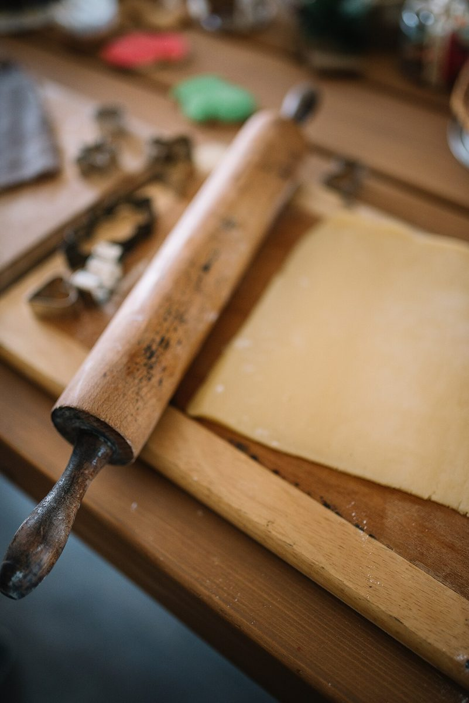

店のこと
アーチの型
お店について確認できているのは、所在地とInstagramのアカウントだけです。

このページの「抜く手順」は、制作側がデザインのために並べたものです。お店の実際の工程・商品・考えとは関係がありません。
確認できていること
- 店名は「Gateaux cafe Le Coeur」、業種は焼き菓子・カフェ
- 所在地は福島県西白河郡泉崎村泉崎舘119-4
- 電話番号はなし。連絡はInstagramから
- 営業時間・定休日・メニュー・価格・ご予約・駐車場は準備中
ふたつめの連想
型を抜く、四つの手順(デザイン上の見立て)
制作側の連想です。お店の理念・由来とは無関係で、店名の由来も分かりません。
- 1のばす
台の上に、まっさらな一枚のページを広げる。

撮影地不明のイメージ - 2ぬく
ハートやまるの型で、写真の形を決める。

撮影地不明のイメージ - 3ならべる
抜いた形を、ページの上に並べていく。

撮影地不明のイメージ - 4のこす
残った余白は、文字を置く場所にする。

国外のイメージ(米国)